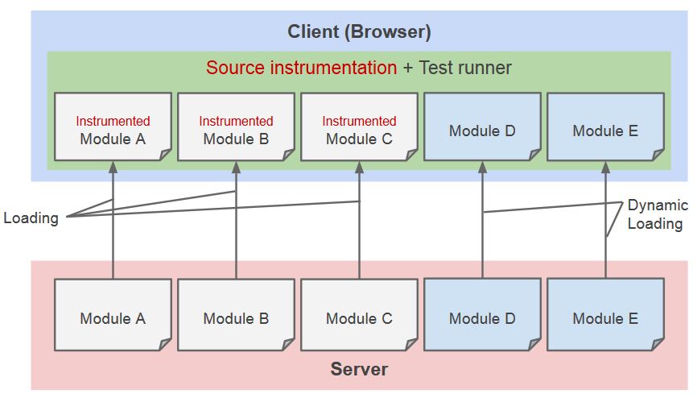
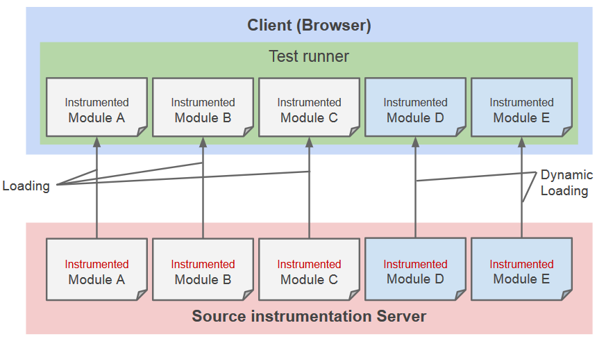

Test coverage on
Dynamic Lazy Loading JavaScript
Created by Ricky Chien
Test coverage
Why we need test coverage?
For better software quality, we need to write tests
Coverage tool can give us a statistics report after testing

Blanket.js - JavaScript test coverage tool
Web application
Web is changing
Client (Browser) can take more jobs than server
Like a desktop application but it is written by web technique

Web application depends on network

Dynamic lazy loading
Using javascript to load javascript in run-time
Add conditions to determine when will need to load javascript

Background
Source instrumentation

Before
After
Browser instrumentation
Code instrumentation on browser
Server instrumentation
Code instrumentation on coverage server
Issue - Zero coverage
Case 1
Firefox OS email app should be covered 21 modules

Case 2

Analysis
Analyze web dynamic lazy loading approachs
Script Loading - HTML Script
<script src="path-to/script.js"></script>
Script Loading - XHR (Ajax)
var xhr = new XMLHttpRequest();
xhr.open('GET', 'path-to/script.js'); // Assign script url
xhr.onload = function (script) {
eval(script); // Execute script
};
xhr.send();
Script Loading - Document.write
document.write('');
Script Loading - DOM modification API
appendChild / insertBefore / replaceChild
var script = document.createElement("script");
script.src = url; // Assign script url
document.head.appendChild(script);
parentNode.insertBefore(script, node);
parentNode.replaceChild(script, oldNode);
Script Loading - Function Wrapping
Famous module loader library such as RequireJS using syntax :
require(["path-to/script.js"], function() {
// This function is called after path-to/script.js has loaded.
});
Summary

Method
Browser Instrumentation Review

Solution

DOM modification API
Overwrite native appendChild / insertBefore / replaceChild
var originalAppendChild = Element.prototype.appendChild;
Element.prototype.appendChild = function(newElement) {
// Do our hack here
return originalAppendChild.apply(this, args); // invoke native method
};
XHR API
Overwrite native open method in XHR object
var originalXHROpen = XMLHttpRequest.prototype.open;
XMLHttpRequest.prototype.open = function(method, url) {
// Do our hack here
return originalXHROpen.apply(this, args); // invoke native method
};
Achievement
A simple dynamic lazy loading website
New feature has landed in Firefox OS
New feature has been proposed to blanket
Conclusion
We demonstrated the zero coverage issue
Analyzed prevalent dynamic lazy loading schemes
Proposed a solution to overwrite native Web APIs to addressing zero coverage issue
Experiment was successful so that can cover dynamic lazy loading scripts
Solution is very stable and support most of modern browsers
New feature will land into Blanket.js